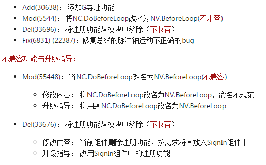
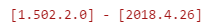
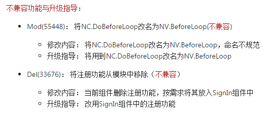
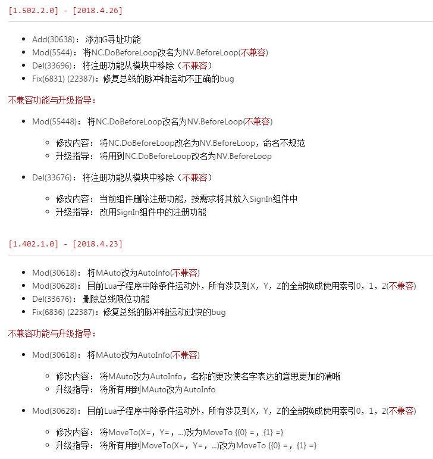

包历史记录填写规范
============================
版次：2018年4月26日 第1.0版
类型：程序文件
作者：Phoenix 架构平台
上海维宏电子科技有限公司 版权所有
1. 目的及适用范围
- 编写本规范的目的是为了统一 Phoenix 打包时的历史记录的编写风格，提高历史记录的一致性和可读性；
- 方便使用工具将包中的历史记录抽出作为 markdown 保存起来。
2. 术语和定义
下列术语和定义适用于本规范：
Add (shelveset Id)指添加的功能 <不兼容>；Mod (shelveset Id)指修改的功能 <不兼容>；Del (shelveset Id)指删除的功能 <不兼容>；Fix(bugId)(shelveset Id)指修复的bug <不兼容>- 【注意】
shelveset Id为按需添加；- 【注意】 <
不兼容> 为按需添加，不写默认为兼容。
- 【注意】 <
- 【注意】
2.1 术语说明
| 术语 | 说明 |
|---|---|
| shelveset Id | 提交代码后在 TFS 中的 ID， 方便查找 Code<若有多个id，以逗号分隔向后添加> |
| bug id | 修改的 bug ID |
| Add | 功能的添加。例如添加一个查询功能就属于 Add |
| Mod | 功能的修改。例如修改了查询功能的实现方式或者接口命名就属于 Mod |
| Del | 功能的删除。例如删除了查询功能就属于 Del |
| Fix | 表示修改了哪个 bug |
<不兼容> |
表示与其他版本不兼容。需要明确标注出来，默认是兼容 注意： - 如果功能和其他版本不兼容必须在后面明确标注，并在下方写出详细说明和升级指导。 - 详细说明包括接口更改与接口删除等不兼容原因。 |
2.2 术语示例

3. 文件名称
历史记录文件名称是 history.md。
- 文件名后缀为
.md，表明是 markdown 文件。 - 记录内容要求
UTF-8字符编码。 - history.md 文件必须放在打包的根目录下。如果在项目其他目录下，生成项目时要求复制到根目录。
### 3.1 文件名示例
history.md
4. 题目命名
题目由版本号和更新时间构成 。
4.1 题目示例

5. 内容
内容以 [*] 作为序号分隔符填写， 每一个内容代表一个更改。
5.1 内容示例
6. 不兼容与升级指导格式说明
不兼容与升级建议里需要包含不兼容的接口，功能等不兼容原因，并给出解决方案或升级指导。
6.1 不兼容示例

7. 完整示例

完整代码示例：
`[1.502.2.0] - [2018.4.26]`
============================
* Add(30638)： 添加G寻址功能
* Mod(5544)： 将NC.DoBeforeLoop改名为NV.BeforeLoop(`不兼容`)
* Del(33696)： 将注册功能从模块中移除（`不兼容`）
* Fix(6831) (22387)：修复总线的脉冲轴运动不正确的bug
`不兼容功能与升级指导：`
* Mod(55448)： 将NC.DoBeforeLoop改名为NV.BeforeLoop(`不兼容`)
* 修改内容： 将NC.DoBeforeLoop改名为NV.BeforeLoop，命名不规范
* 升级指导： 将用到NC.DoBeforeLoop改名为NV.BeforeLoop
* Del(33676)： 将注册功能从模块中移除（`不兼容`）
* 修改内容： 当前组件删除注册功能，按需求将其放入SignIn组件中
* 升级指导： 改用SignIn组件中的注册功能
`[1.402.1.0] - [2018.4.23]`
============================
* Mod(30618)： 将MAuto改为AutoInfo(`不兼容`)
* Mod(30628)： 目前Lua子程序中除条件运动外，所有涉及到X，Y，Z的全部换成使用索引0，1，2(`不兼容`)
* Del(33676)： 删除总线限位功能
* Fix(6836) (22387)：修复总线的脉冲轴运动过快的bug
`不兼容功能与升级指导：`
* Mod(30618)： 将MAuto改为AutoInfo(`不兼容`)
* 修改内容： 将MAuto改为AutoInfo，名称的更改使名字表达的意思更加的清晰
* 升级指导： 将所有用到MAuto改为AutoInfo
* Mod(30628)： 目前Lua子程序中除条件运动外，所有涉及到X，Y，Z的全部换成使用索引0，1，2(`不兼容`)
* 修改内容： 将MoveTo(X=，Y=，...)改为MoveTo {{0} =，{1} =}
* 升级指导： 将所有用到MoveTo(X=，Y=，...)改为MoveTo {{0} =，{1} =}
版本信息
| 版本 | 日期 | 修改人 | 修改内容 |
|---|---|---|---|
| 1.0 | 2018/4/26 | Phoenix 架构平台 | 初版建立 |